{kind=link}
1. Herring Gull
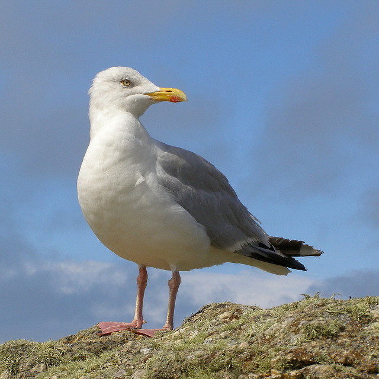
Strikes reported: 532
Conservation status: Not rated
Info about the bird. The bird is really cool and crazy and there is a lot of stuff you should know about this bird. This bird sometimes gets hit by planes also.
2. American Kestrel
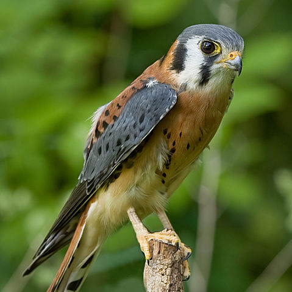
Strikes reported: 386
Conservation status: Least concern
Sometimes called a sparrow hawk, the American Kestrel is actually a small species of falcon. This hearty predator can live just about anywhere, from the frigid climes north of the Arctic Circle down to the temperate tropics of Central America and up into the high elevations of the Andes mountains. It hunts over airports’ open spaces, seeking mice, lizards, grasshoppers and small birds.
3. European Starling
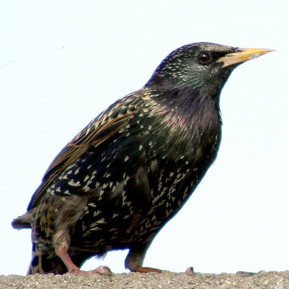
Strikes reported: 299
Conservation status: Least concern
Info about the bird. The bird is really cool and crazy and there is a lot of stuff you should know about this bird. This bird sometimes gets hit by planes also.
4. Barn Swallow

Strikes reported: 281
Conservation status: Least concern
Info about the bird. The bird is really cool and crazy and there is a lot of stuff you should know about this bird. This bird sometimes gets hit by planes also.
5. Laughing Gull
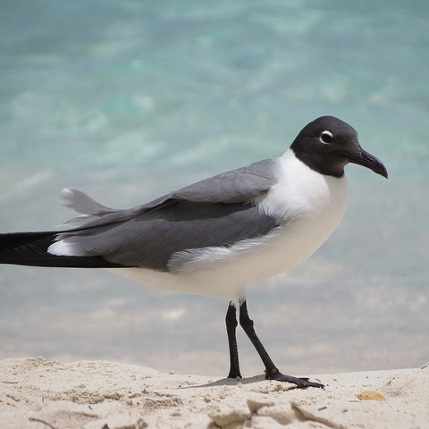
Strikes reported: 216
Conservation status: Least concern
Info about the bird. The bird is really cool and crazy and there is a lot of stuff you should know about this bird. This bird sometimes gets hit by planes also.
6. Rock Pigeon
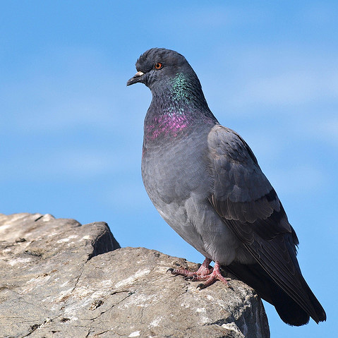
Strikes reported: 212
Conservation status: Least concern
Info about the bird. The bird is really cool and crazy and there is a lot of stuff you should know about this bird. This bird sometimes gets hit by planes also.
7. Mourning Dove
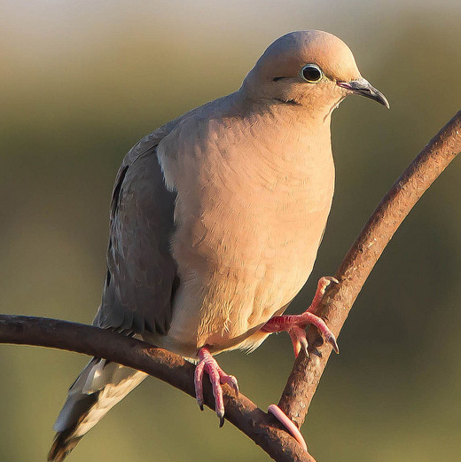
Strikes reported: 209
Conservation status: Least concern
Info about the bird. The bird is really cool and crazy and there is a lot of stuff you should know about this bird. This bird sometimes gets hit by planes also.
8. Killdeer
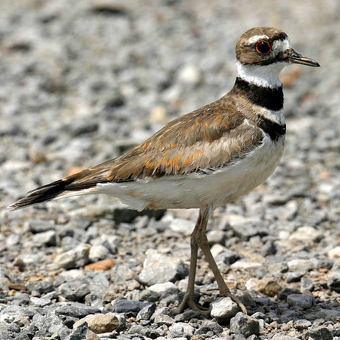
Strikes reported: 154
Conservation status: Least concern
Info about the bird. The bird is really cool and crazy and there is a lot of stuff you should know about this bird. This bird sometimes gets hit by planes also.
9. Ring-billed Gull
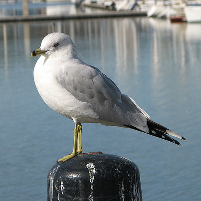
Strikes reported: 145
Conservation status: Least concern
Info about the bird. The bird is really cool and crazy and there is a lot of stuff you should know about this bird. This bird sometimes gets hit by planes also.
10. Mallard
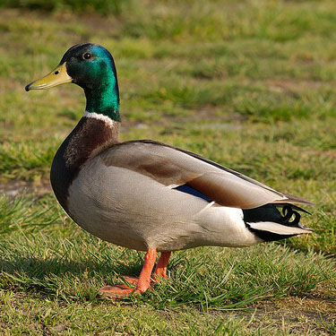
Strikes reported: 141
Conservation status: Least concern
Info about the bird. The bird is really cool and crazy and there is a lot of stuff you should know about this bird. This bird sometimes gets hit by planes also.
11. Barn Owl
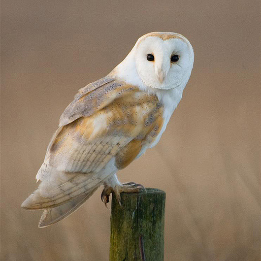
Strikes reported: 128
Conservation status: Least concern
Info about the bird. The bird is really cool and crazy and there is a lot of stuff you should know about this bird. This bird sometimes gets hit by planes also.
12. Eastern Meadowlark
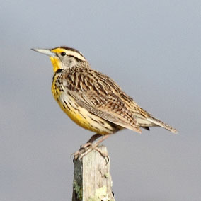
Strikes reported: 127
Conservation status: Least concern
Info about the bird. The bird is really cool and crazy and there is a lot of stuff you should know about this bird. This bird sometimes gets hit by planes also.
13. Canada Goose
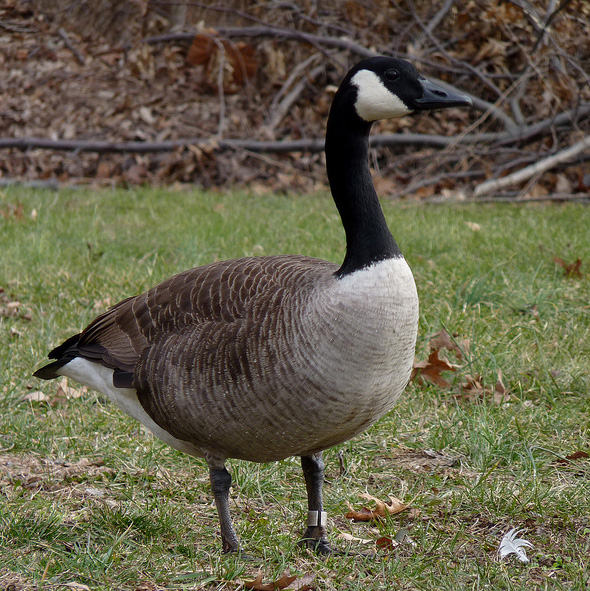
Strikes reported: 123
Conservation status: Least concern
Info about the bird. The bird is really cool and crazy and there is a lot of stuff you should know about this bird. This bird sometimes gets hit by planes also.